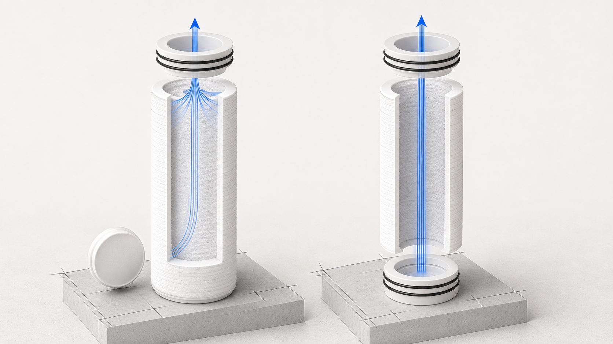

Các lõi lọc cặn PP thổi nóng chảy — SOE và DOE
PP · chỉ các thông tin thực tế đã được chấp nhậnSOE và DOE mô tả hình dạng đầu lõi lọc, không phải hiệu suất lọc. Trang này định nghĩa cả hai thuật ngữ và chỉ công bố các kích thước DOE đã được chấp nhận, thể hiện trong các ảnh chụp thông số kỹ thuật Yuchen được cung cấp; phần ảnh cắt được cung cấp không có bảng số liệu SOE.

Thông tin kỹ thuật đã được xác minh
Các tùy chọn được liệt kê trong nguồn phải được đối chiếu và xác nhận theo báo giá và bản vẽ sản xuất.
Cấu hình
- SOE
- 1 × đầu hở + 1 × đầu kín
- DOE
- 2 × đầu hở
DOE · Loại thông thường / Big Blue
| Biến thể | Chiều dài | Đường kính ngoài (OD) | Đường kính trong (ID) | Dải cấp lọc micron |
|---|---|---|---|---|
| 10 in | 254 ± 2 mm | 61 ± 2 mm | 28.3 ± 0.3 mm | 0.5–100 μm |
| 20 in | 508 ± 2 mm | 61 ± 2 mm | 28.3 ± 0.3 mm | 0.5–100 μm |
| 30 in | 762 ± 2 mm | 61 ± 2 mm | 28.3 ± 0.3 mm | 0.5–100 μm |
| 40 in | 1016 ± 2 mm | 61 ± 2 mm | 28.3 ± 0.3 mm | 0.5–100 μm |
| 10 in Big Blue | 254 ± 2 mm | 110 ± 2 mm | 28 mm / 30 mm | 0.5–100 μm |
| 20 in Big Blue | 508 ± 2 mm | 110 ± 2 mm | 28 mm / 30 mm | 0.5–100 μm |
DOE · Lõi đỡ
| Biến thể | Chiều dài | Đường kính ngoài (OD) | Đường kính trong (ID) | Khối lượng |
|---|---|---|---|---|
| Lõi đỡ 1 | 508 ± 2 mm | 61 ± 2 mm | 30 ± 0.3 mm | 240 ± 10 g |
| Lõi đỡ 2 | 762 ± 2 mm | 61 ± 2 mm | 30 ± 0.3 mm | 360 ± 10 g |
| Lõi đỡ 3 | 1016 ± 2 mm | 61 ± 2 mm | 30 ± 0.3 mm | 480 ± 10 g |
| Lõi đỡ 4 | 1016 ± 2 mm | 63 ± 2 mm | 30 ± 0.3 mm | 520 ± 10 g |
DOE · Tùy chỉnh
| Biến thể | Chiều dài | Đường kính ngoài (OD) | Đường kính trong (ID) | Khối lượng | Dải cấp lọc micron |
|---|---|---|---|---|---|
| 20.5 in | 525 mm | 47.5 ± 2 mm | 28 ± 0.3 mm | 160 ± 10 g | 0.5–100 μm |
| 15 in | 381 mm | 61 ± 2 mm | 28 ± 0.3 mm | 200 g | 0.5–100 μm |
| 22 in | 558 mm | 61 ± 2 mm | 28 ± 0.3 mm | 240 ± 10 g | 0.5–100 μm |
| 42 in | 1066 mm | 61 ± 2 mm | 28 ± 0.3 mm | 460 ± 10 g | 0.5–100 μm |
Tùy chọn bề mặt: Nhẵn · Dạng chấm · Rãnh nhỏ · Rãnh sâu. Các tùy chọn được liệt kê trong nguồn phải được đối chiếu và xác nhận theo báo giá và bản vẽ sản xuất.
Cách lựa chọn
- Gửi thông tin về ứng dụng, tình trạng nước cấp và công đoạn kiểm soát cặn cần thiết.
- Xác nhận chiều dài lõi lọc, đường kính ngoài (OD), đường kính trong (ID), cấp lọc micron, cấu hình đầu lõi và vật liệu làm kín.
- Xác nhận kiểu kết nối với vỏ lọc, số lượng, quy cách đóng gói và các tài liệu cần có.
Cách lựa chọn
SOE và DOE khác nhau như thế nào?
SOE có một đầu hở và một đầu kín hoặc đầu có bộ chuyển đổi. DOE có hai đầu hở. Các thuật ngữ này mô tả hình dạng đầu lõi, không phải hiệu suất lọc.
Người mua cần xác nhận những gì đối với lõi lọc cặn PP thổi nóng chảy — SOE và DOE?
Xác nhận chiều dài lõi lọc, đường kính ngoài và đường kính trong, cấp lọc micron, cấu hình đầu lõi, vật liệu làm kín và độ tương thích với vỏ lọc trước khi báo giá.
Yêu cầu báo giá kỹ thuật: Lõi lọc cặn PP thổi nóng chảy — SOE và DOE
Xác nhận chiều dài lõi lọc, đường kính ngoài và đường kính trong, cấp lọc micron, cấu hình đầu lõi, vật liệu làm kín và độ tương thích với vỏ lọc trước khi báo giá.